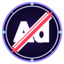

AdOff 설치
단 몇 번의 클릭으로 광고 자유를 얻으세요. 2분 안에 설치 완료.
감지됨:
첫 설치: 30일 Pro 무료
신용카드 불필요. 스텔스 모드, 스트리밍 플랫폼 동영상 광고 차단, 일시 중지 기능 등 모든 Pro 기능을 사용할 수 있습니다. 30일 후에는 계속 이용하거나 무료 플랜으로 전환할 수 있습니다(웹사이트 광고 차단).
모든 브라우저에서 사용 가능
Chrome, Firefox, Safari, Edge, Brave, Opera. Windows, macOS, Linux, Android에서 지원.
브라우저
운영체제
공식 스토어에서 바로 설치
한 번의 클릭. 자동 업데이트. 100% 안전.
✓ 모든 릴리스 전 수동 코드 검토 ·
✓ 스토어를 통한 자동 업데이트 ·
✓ 검증 가능한 무결성 해시
수동으로 설치하고 싶으신가요? ZIP 다운로드 →
개발자 설치/사이드로드를 원하거나 Safari용(Mac App Store 준비 중).
Chromium ZIP
Chrome · Edge · Brave · Opera
Chrome ZIP 다운로드
v3.5.36 · 초경량 · 모든 기능 포함
Firefox ZIP
Firefox 데스크톱 · Firefox Android
Firefox ZIP 다운로드
v3.5.36 · 초경량 · 영구 설치
Safari ZIP
Safari 16.4+ · macOS Ventura+
Safari 다운로드
v3.5.36 · 초경량 · Mac App Store 준비 중
단계 2: 설치
브라우저를 선택하여 지침을 확인하세요
Chrome
Edge
Brave
Opera
Vivaldi
Firefox
Safari
모바일
1
ZIP 파일 추출
다운로드 폴더에서
adoff-chrome.zip을 찾으세요.
Windows: 마우스 우클릭 →
모두 추출 →
추출
Mac: ZIP 파일을 두 번 클릭합니다. 폴더가 자동으로 생성됩니다.
Linux: 마우스 우클릭 →
여기로 추출 또는
unzip adoff-chrome.zip
⚠
중요: 설치 후 폴더를 삭제하지 마세요. 브라우저가 디스크에서 폴더를 읽어야 합니다. 안전한 장소(예: 문서)에 보관하세요.
2
Chrome 확장 프로그램 페이지 열기
Chrome을 열고 주소 표시줄에 chrome://extensions을 입력한 후 Enter를 누르세요.
설치된 모든 확장 프로그램을 보여주는 페이지가 열립니다.
3
개발자 모드 활성화
페이지 우측 상단에서
개발자 모드 토글을 찾으세요.
클릭하여 활성화하세요(파란색으로 변함).
💡
보이지 않으면 페이지 위로 스크롤하세요.
4
확장 프로그램 로드
개발자 모드를 활성화한 후 새 버튼들이 상단에 나타납니다.
압축하지 않은 확장 프로그램 로드를 클릭하세요(왼쪽에서 첫 번째).
폴더를 선택하는 창이 열립니다.
5
AdOff 폴더 선택
1단계에서 추출한 폴더로 이동하세요.
adoff-chrome을 선택하고
폴더 선택(Windows/Linux) 또는
열기(Mac)를 클릭하세요.
✅
완료. AdOff가 설치되었습니다. Chrome 도구 모음에 아이콘이 표시됩니다.
6
도구 모음에 AdOff 고정(권장)
AdOff를 항상 도구 모음에 표시하려면:
1. 우측 상단의 퍼즐 아이콘(확장 프로그램) 클릭
2. 목록에서 AdOff 찾기
3. AdOff 옆의 핀 클릭
이제 아이콘이 항상 표시됩니다.
1
ZIP 파일 추출
Chrome과 동일: 다운로드에서
adoff-chrome.zip을 찾고 마우스 우클릭 →
모두 추출
⚠
중요: 추출된 폴더를 컴퓨터에 계속 보관하세요. 삭제하지 마세요.
2
Edge 확장 프로그램 열기
주소 표시줄에 edge://extensions을 입력하고 Enter를 누르세요.
3
개발자 모드 활성화
페이지 하단 좌측에서 개발자 모드를 활성화하세요.
4
확장 프로그램 로드
압축하지 않은 확장 프로그램 로드를 클릭하고 추출된 폴더 adoff-chrome을 선택하세요.
5
완료
✅
AdOff가 Edge에 설치되었습니다. Chrome과 동일하게 작동합니다.
1
Chrome과 동일한 절차
Brave는 Chrome과 동일한 시스템을 사용합니다. 동일한 단계를 따르세요:
1. ZIP 추출
2.
brave://extensions로 이동
3. 개발자 모드 활성화(우측 상단)
4. 압축하지 않은 확장 프로그램 로드
5. 폴더 선택
✅
AdOff는 Brave의 내장 차단 기능과 완벽하게 작동합니다. 충돌이 없습니다.
1
Chrome과 동일한 절차
Opera는 Chromium 엔진을 사용합니다. 동일한 단계를 따르세요:
1. ZIP 추출
2.
opera://extensions로 이동
3. 개발자 모드 활성화(우측 상단)
4. 압축하지 않은 확장 프로그램 로드
5. 폴더 선택
💡
Opera가 타사 확장 프로그램 요청을 표시할 수 있습니다. 진행하려면 허용을 클릭하세요.
1
Chrome과 동일한 절차
Vivaldi는 Chromium 엔진을 사용합니다. 동일한 단계를 따르세요:
1. ZIP 추출
2. vivaldi://extensions로 이동
3. 개발자 모드 활성화(우측 상단)
4. 압축하지 않은 확장 프로그램 로드
5. 폴더 선택
🔥
Firefox 버전
Chromium이 아닌 Firefox 버전(adoff-firefox.zip)을 다운로드했는지 확인하세요.
1
ZIP 파일 추출
다운로드에서 adoff-firefox.zip을 찾아 추출하세요.
2
Firefox 디버그 페이지 열기
주소 표시줄에 about:debugging#/runtime/this-firefox를 입력하고 Enter를 누르세요.
3
임시 부가 기능 로드
임시 부가 기능 로드를 클릭하세요
추출된 폴더의
manifest.json 파일을 선택하세요.
⚠
Firefox에서 수동으로 로드된 확장 프로그램은 임시적입니다. Firefox를 닫으면 사라지고 매번 다시 로드해야 합니다. Firefox Add-ons Store에 게시하여 영구적으로 설치할 수 있도록 작업 중입니다.
🧭
시작하기 전에
Safari는 다른 브라우저보다 더 엄격합니다. 확장 프로그램을 설치하려면 Xcode(Apple의 무료 프로그램)가 필요합니다. 처음에는 약 30분이 걸립니다. macOS Ventura 13 이상, Safari 16.4 이상 필요합니다. 터미널을 열어본 적이 없어도 걱정하지 마세요. 단계별로 안내해드리겠습니다.
1
ZIP 파일 추출
1.1 Finder(하단 Dock의 웃는 아이콘)를 열기.
1.2 왼쪽 사이드바에서 다운로드 클릭.
1.3 adoff-safari.zip 파일 찾기(방금 다운로드한 파일).
1.4 파일을 두 번 클릭합니다. macOS가 자동으로 추출하고 ZIP 옆에 adoff-safari 폴더를 생성합니다.
1.5 이 폴더를 이동하거나 이름을 바꾸지 마세요. 다운로드 폴더에 그대로 두세요.
2
Xcode 설치(무료, 약 10GB)
2.1 Mac App Store 열기(Dock의 흰색 "A" 파란색 아이콘 또는 Launchpad).
2.2 좌측 상단 검색 표시줄에
Xcode를 입력하고
Return 누르기.
2.3 Xcode(Apple의 Apple 아이콘) 항목에서
다운로드 또는
설치 클릭.
2.4 필요하면 Apple ID로 로그인(App Store와 동일한 계정).
2.5 다운로드를 기다립니다. Xcode는 크기가 크며(약 10GB) 20~60분이 걸릴 수 있습니다.
2.6 준비되면 Xcode를 한 번 이상 열기: Launchpad 또는 Applications에서 아이콘 클릭.
2.7 라이센스 조건이 있는 창이 나타납니다.
동의를 클릭하세요.
2.8 Xcode가 초기 설정을 마칠 때까지 기다립니다(1~2분). 완료되면 닫으세요(Cmd+Q).
💡
Mac에 충분한 공간이 없으면 시작하기 전에 최소 15GB를 확보하세요.
3
터미널을 열고 명령어 실행
3.1 Cmd + Space를 함께 누릅니다. 상단에 검색 표시줄(Spotlight)이 열립니다.
3.2 Terminal을 입력하고
Return을 누릅니다. 흰색/검은색 창(Terminal, 무섭지 않은 일반 Mac 프로그램)이 열립니다.
3.3 이 명령어를 정확히
복사하세요(회색 상자를 클릭하여 선택한 후 Cmd+C):
xcrun safari-web-extension-converter ~/Downloads/adoff-safari
3.4 Terminal 창을 클릭하고 Cmd+V로 붙여 넣은 후
Return을 누르세요.
3.5 Terminal에 "Continue?"를 물어봅니다.
y를 입력하고
Return을 누르세요.
3.6 30~60초 기다립니다. Xcode가 자동으로 열리고 "AdOff" 프로젝트가 표시됩니다.
3.7 Xcode에서 좌측 상단의
▶ 재생 버튼을 클릭합니다(또는 Cmd+R).
3.8 컴파일링: 1~3분 기다립니다. 작은 "AdOff" 창이 열릴 수 있습니다. 닫아도 됩니다(확장 프로그램이 이미 설치됨).
⚠
"permission denied" 또는 "command not found"가 나타나면: Xcode 열기, 설정, 위치, Command Line Tools를 선택하고 최신 버전을 선택한 후 3.4단계를 다시 시도하세요.
4
Safari에서 개발 메뉴 활성화
4.1 Safari(Dock의 나침반 아이콘) 열기.
4.2 상단 메뉴 표시줄에서 Safari → 설정(또는 Cmd+,) 클릭.
4.3 상단에 여러 탭이 있는 창이 열립니다. 고급 클릭(마지막 탭, 톱니바퀴 아이콘).
4.4 하단에서 웹 개발자 기능 표시 옵션 찾기(또는 이전 버전에서 "개발 메뉴 표시").
4.5 체크박스를 선택합니다. Safari 메뉴 표시줄에 새로운 개발 메뉴가 나타납니다.
4.6 설정 창을 닫습니다.
5
서명되지 않은 확장 프로그램 허용
5.1 Safari 메뉴 표시줄에서 새로운
개발 메뉴 클릭.
5.2 메뉴를 스크롤하고
서명되지 않은 확장 프로그램 허용 클릭.
5.3 Safari가
Mac 암호(로그인할 때 사용하는 암호) 요청합니다. 입력하고 Return 누르세요.
5.4 옵션이 이제 활성화됨(확인: 개발 메뉴를 다시 열면 "서명되지 않은 확장 프로그램 허용"에 체크 표시가 있음).
⚠
중요: 이 옵션은 Safari를 다시 시작할 때마다 자동으로 비활성화됩니다. 매번 다시 활성화해야 합니다(단계 5.1~5.3) 시스템을 재시작할 때마다..
6
AdOff 활성화
6.1 Safari 설정을 다시 열기:
Safari →
설정(또는 Cmd+,).
6.2 확장 프로그램 탭 클릭(퍼즐 아이콘).
6.3 왼쪽 목록에
AdOff가 표시됩니다. 옆의
체크박스를 선택하세요.
6.4 사이트 액세스 권한을 묻는 팝업이 나타납니다.
모든 사이트에서 항상 허용을 클릭하세요(또는 "모든 사이트에서 허용").
6.5 설정을 닫습니다. 광고가 있는 모든 사이트를 방문합니다(뉴스, 동영상 플랫폼, 포럼). 광고가 차단됩니다.
6.6 AdOff 아이콘(빨간색 오버레이가 있는 "A")이 자동으로 Safari 우측 상단 도구 모음에 나타납니다. 클릭하여 컨트롤 팝업을 열기.
✅
완료. AdOff가 활성화되었습니다. 30일 Pro 평가판이 있습니다. 아이콘에 카운트다운이 표시됩니다.
🔒
설치를 영구적으로 만들기
서명되지 않은 확장 프로그램은 Safari를 다시 시작할 때 비활성화됩니다. 매번 5단계를 반복하지 않고 AdOff를 계속 사용하려면 두 가지 옵션이 있습니다: (1) Apple Developer 프로그램($99/년)에 가입하고 확장 프로그램을 직접 서명하기 또는 (2) Mac App Store 출시를 기다리기. 곧 한 번의 클릭으로 자동 설치 가능..
📱
필요한 모바일 브라우저
Android에서는 확장 프로그램을 지원하는 브라우저가 필요합니다. Kiwi 브라우저(무료) 또는 Firefox Android를 권장합니다.
1
Kiwi 브라우저 설치
Play Store에서 Kiwi 브라우저를 다운로드하세요. 무료이며 Chrome 확장 프로그램을 기본적으로 지원합니다.
2
AdOff 다운로드
Kiwi 브라우저에서 이 페이지를 열고 adoff-chrome.zip을 다운로드합니다. 파일 관리자를 사용하여 ZIP을 추출합니다.
3
확장 프로그램 로드
Kiwi 브라우저에서
chrome://extensions로 이동합니다
개발자 모드를 활성화하고
압축하지 않은 확장 프로그램 로드(또는
"+(ZIP/CRX/.user.js에서)")를 탭하고 추출된 폴더를 선택합니다.
✅
AdOff가 이제 Android 기기에서 작동합니다.
Pro 평가판으로 잠금 해제할 수 있는 항목
무료 플랜(평가판 후)
✓ 네트워크 차단 144개 규칙
✓ CSS 시각 필터
✓ 광고 카운터
✗ 동영상 광고 중립화
✗ 스텔스 모드
Pro 플랜(평가판 30일 포함)
✓ 무료의 모든 기능
✓ 광고 없는 동영상
✓ 스텔스 탐지 회피
✓ 일시 중지 타이머
✓ 우선 지원
자주 묻는 질문
컴퓨터에 폴더를 보관해야 합니까? ▼
예. 브라우저가 폴더에서 확장 프로그램 파일을 읽습니다. 삭제하면 확장 프로그램이 작동하지 않습니다. 안전한 장소(예: 문서)에 보관하세요.
개발자 모드를 활성화하는 것이 안전합니까? ▼
예, 완전히 안전합니다. 개발자 모드는 스토어 대신 폴더에서 확장 프로그램을 설치할 수 있도록 할 뿐입니다. 브라우저의 다른 것은 변경하지 않습니다.
브라우저에서 "개발자 확장 프로그램 비활성화" 메시지가 표시됩니다. 어떻게 해야 합니까? ▼
일부 브라우저는 수동으로 설치된 확장 프로그램이 있을 때 시작할 때 경고를 표시합니다. 단순히 경고를 닫으세요. 확장 프로그램은 정상적으로 계속 작동합니다. AdOff가 공식 스토어에 출시되면 이 경고는 사라집니다.
AdOff를 어떻게 업데이트합니까? ▼
사이트에서 새 버전을 다운로드하고 같은 폴더에 ZIP을 추출한 후(파일 덮어쓰기) 브라우저의 확장 프로그램 페이지로 이동하여 AdOff의 "새로 고침" 화살표를 클릭합니다.
모든 사이트에서 작동합니까? ▼
예. AdOff는 모든 웹사이트의 광고를 차단합니다(배너, 팝업, 추적기, 소셜 미디어, 뉴스, 블로그). Pro/평가판에서는 스트리밍 플랫폼의 동영상 광고 차단을 사용할 수 있습니다. 필요한 경우 특정 사이트에서 차단을 일시 중지할 수도 있습니다.
AdOff를 어떻게 제거합니까? ▼
브라우저의 확장 프로그램 페이지로 이동하여 AdOff를 찾고 "제거"를 클릭합니다. 그 후 컴퓨터에서 폴더를 삭제할 수 있습니다.
어떤 브라우저가 지원됩니까? ▼
AdOff는 100% 기능 호환성이 있는 모든 Chromium 브라우저(Chrome, Edge, Brave, Opera, Vivaldi, Arc), 95%의 Firefox, macOS Ventura+ Safari 16.4+를 지원합니다(Xcode 필요, 95%). Android에서는 Kiwi 브라우저 또는 Firefox를 사용합니다. iOS 지원이 곧 출시될 예정입니다.
모바일에서 작동합니까? ▼
Android에서 Play Store의 무료 Kiwi 브라우저를 설치하면 확장 프로그램을 지원합니다. iOS에서는 브라우저 확장 프로그램이 아직 지원되지 않습니다. 현재 작업 중입니다.